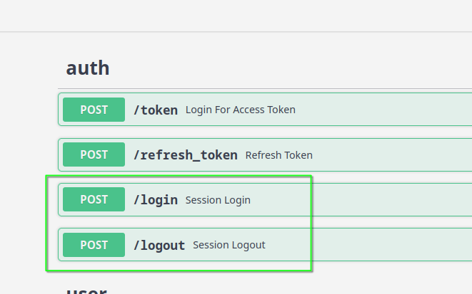
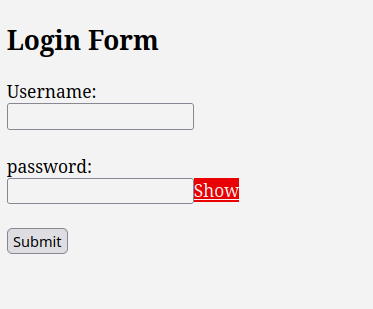
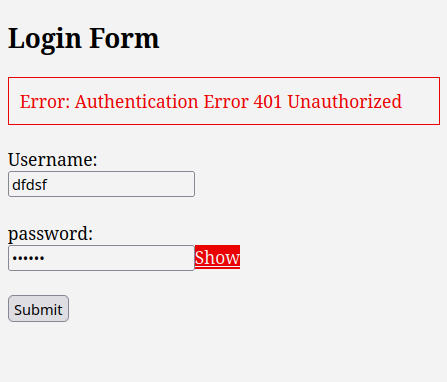
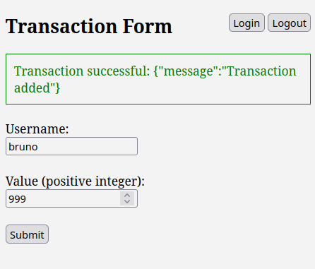

Front-end e Autenticação
Autenticação consiste em validar as credenciais de um usuário para conceder ou negar acesso a um recurso.
Solicitar as credenciais a cada tentativa de acesso tornaria a experiência do usuário muito desagradável. Por isso, existem dois modelos de persistência de autenticação comumente utilizados quando integrados ao front-end.
Algumas aplicações adotam ambos os modelos simultaneamente, já que é recomendável, e às vezes até necessário, ter mais de um backend de autenticação.
Imagine um cenário em que o aplicativo tem usuários cadastrados diretamente no app (como um usuário administrador, por exemplo), usuários com acesso via token (senhas de app), usuários autenticados através de serviços de diretório como AD/LDAP/Keycloak e provedores de autenticação via OAuth (Google, GitHub, etc.).
Nesse caso, a aplicação pode definir um pipeline de autenticação, chamado de auth backends.
Ex:
[local_users, token, ldap, oath]
No framework Django, por exemplo, configurar esse pipeline de autenticação é bastante simples: basta adicionar as configurações e listar os backends na ordem desejada, sendo que a ordem faz toda a diferença. Já em micro-frameworks como FastAPI, é necessário definir manualmente todo o pipeline.
Modelo de Persistência
Após o usuário autenticar, independentemente da fase do pipeline em que a autenticação ocorreu, é uma boa prática manter o estado de "autenticado" por um período predefinido, evitando que todo o pipeline tenha que ser executado novamente em cada requisição.
Sessão
A forma mais tradicional de fazer isso é através de sessões (Session). O conceito é simples:
- O usuário envia as credenciais para um endpoint /login.
- Em caso de sucesso, o servidor gera um ID único para a sessão, como "123456".
- Esse ID é armazenado em algum tipo de storage (memória, banco de dados, cache).
- Além do ID, o servidor também define um timestamp de expiração, por exemplo, 24h (lease time).
- O cliente (navegador) recebe um cookie contendo o ID da sessão "123456".
Assim, tanto no lado do servidor (no storage) quanto no cliente (no cookie) existe a mesma informação: "123456 válido até 16h".
Toda vez que o cliente faz uma requisição, o cookie é enviado ao servidor, que verifica se os dados do cookie coincidem com os do storage e se a validade não expirou.
Opcionalmente, podem ser armazenadas informações adicionais como IP e dispositivo.
Existem implicações de segurança nesse modelo que podem ser mitigadas com técnicas de proteção como XSS, CSRF, entre outras.
Token
Este modelo é mais indicado quando já existe uma estrutura de autenticação por token (como no nosso caso), e a preferência é deixar a implementação a cargo do front-end.
O fluxo de trabalho é o seguinte:
- O usuário faz login por meio de um formulário em /login.html.
- O formulário envia as credenciais para o endpoint /token e recebe um token e um refresh token.
- O front-end armazena esses dados em um cookie ou local storage.
- A cada requisição, o front-end valida a expiração do token, verifica a necessidade de refresh e adiciona o token nos headers da requisição.
Este modelo não exige o armazenamento de sessões no servidor, já que não há sessão. O próprio token contém as informações de expiração, e essas informações estão assinadas.
Upgrade do ambiente
No terminal fora do container
pip-compile requirements.in --upgrade --resolver=backtracking
docker compose down
docker compose build api
docker compose up
Implementando Session no FastAPI
Session storage
Primeiro precisamos definir onde guardaremos as sessions, para nossa sorte já temos o Redis em nossa infraestrutura e podemos usar.
Começamos estabelecendo algumas configurações em default.toml
[default.session_store]
host = "@get redis.host"
port = "@get redis.port"
db = 1
expiration = "@int @jinja {{60 * 60 * 24 * 7}}"
Criando funções de gestão de session.
dundie/session.py
from __future__ import annotations
from uuid import uuid4
from dundie.config import settings
from redis import Redis
EXPIRATION = settings.session_store.get("expiration", 60 * 60 * 24)
session_store = Redis(
host=settings.session_store.host,
port=settings.session_store.port,
db=settings.session_store.db,
)
def set_session(username) -> str:
"""Creates a new random session"""
session_id = uuid4().hex
session_store.set(session_id, username, ex=EXPIRATION, nx=True)
return session_id
def get_session(session_id) -> bool | str:
"""Get data from a session_id"""
session_data = session_store.get(session_id)
return session_data and session_data.decode()
Quando o usuário fizer login através de um formulário vamos
criar a sessão usando set_session e vamos isso diretamente no
FastAPI e depois submeter um formulário com HTML.
Session login
E, routes/auth.py vamos adicionar:
from fastapi import ..., Form, Request
from fastapi.responses import Response
from dundie.session import set_session, session_store
...
# session auth
@router.post("/login")
async def session_login(
response: Response,
username: str = Form(),
password: str = Form(),
):
"""Cookie Based Session Auth Login"""
user = authenticate_user(get_user, username, password)
if not user or not isinstance(user, User):
raise HTTPException(
status_code=status.HTTP_401_UNAUTHORIZED,
detail="Incorrect username or password",
)
session_id = set_session(user.username)
response.set_cookie(key="session_id", value=session_id, domain="localhost")
return {"status": "logged in"}
@router.post("/logout")
async def session_logout(request: Request, response: Response):
"""Cookie Based Session Auth Logout"""
if session_id := request.cookies.get("session_id"):
response.delete_cookie(key="session_id")
session_store.delete(session_id)
return {"status": "logged out"}
Ajustando as dependencias de auth
dundie/auth.py
from dundie.session import get_session
...
oauth2_scheme = OAuth2PasswordBearer(tokenUrl="token", auto_error=False)
...
def get_current_user(
request: Request, token: str = Depends(oauth2_scheme), fresh=False # pyright: ignore
) -> User:
"""Get current user authenticated"""
credentials_exception = HTTPException(
status_code=status.HTTP_401_UNAUTHORIZED,
detail="Could not validate credentials",
headers={"WWW-Authenticate": "Bearer"},
)
if request:
if session_id := request.cookies.get("session_id"):
username = get_session(session_id)
if not username:
raise HTTPException(status_code=status.HTTP_401_UNAUTHORIZED, detail="Invalid Session ID")
user = get_user(username=username)
if user is None:
raise HTTPException(status_code=status.HTTP_401_UNAUTHORIZED, detail="Session user not found")
return user
if authorization := request.headers.get("authorization"):
try:
token = authorization.split(" ")[1]
except IndexError:
raise credentials_exception
if not token:
raise credentials_exception
try:
payload = jwt.decode(
token, SECRET_KEY, algorithms=[ALGORITHM] # pyright: ignore # pyright: ignore
)
username: str = payload.get("sub") # pyright: ignore
if username is None:
raise credentials_exception
token_data = TokenData(username=username)
except JWTError:
raise credentials_exception
user = get_user(username=token_data.username)
if user is None:
raise credentials_exception
if fresh and (not payload["fresh"] and not user.superuser):
raise credentials_exception
return user
Agora em http://localhost:8000/docs

Form HTML
Agora precisamos de um formulário HTML para postar as credenciais de login.
ui/login.html
<!DOCTYPE html>
<html lang="en">
<head>
<meta charset="UTF-8">
<meta name="viewport" content="width=device-width, initial-scale=1.0">
<title>Login Form</title>
<style>
#message {
margin-bottom: 20px;
padding: 10px;
border: 1px solid transparent;
display: none;
}
#message.success {
border-color: green;
color: green;
}
#message.error {
border-color: red;
color: red;
}
</style>
</head>
<body>
<h2>Login Form</h2>
<div id="message"></div> <!-- Message div -->
<form id="loginForm">
<label for="username">Username:</label><br>
<input type="text" id="username" name="username" required><br><br>
<label for="password">password:</label><br>
<input type="password" id="password" name="password" required><br><br>
<button type="submit">Submit</button>
</form>
<script>
const messageDiv = document.getElementById('message');
function reset_message_div() {
// Reset the message div
messageDiv.style.display = 'none';
messageDiv.classList.remove('success', 'error');
}
document.getElementById('loginForm').addEventListener('submit', function(event) {
event.preventDefault(); // Prevent the default form submission
const formData = new FormData();
formData.append("username", document.getElementById("username").value);
formData.append("password", document.getElementById("password").value);
reset_message_div();
const url = `http://localhost:8000/login`;
fetch(url, {
method: 'POST',
body: formData,
credentials: 'include'
})
.then(response => {
if (response.status >= 400 && response.status <= 500) {
throw new Error(`Authentication Error ${response.status} ${response.statusText}`);
}
return response.json();
})
.then(data => {
location.href = "/add.html"
})
.catch((error) => {
console.error('Error:', error);
messageDiv.textContent = error;
messageDiv.classList.add('error');
messageDiv.style.display = 'block';
});
});
</script>
</body>
</html>
Agora em http://localhost:8001/login.html


Transaction HTML
ui/add.html
<!DOCTYPE html>
<html lang="en">
<head>
<meta charset="UTF-8">
<meta name="viewport" content="width=device-width, initial-scale=1.0">
<title>Transaction Form</title>
<style>
#message {
margin-bottom: 20px;
padding: 10px;
border: 1px solid transparent;
display: none;
}
#message.success {
border-color: green;
color: green;
}
#message.error {
border-color: red;
color: red;
}
nav#controls {
float: right;
}
</style>
</head>
<body>
<nav id="controls">
<button id="login" onclick="login()">Login</button>
<span>
<button id="logout" onclick="logout()">Logout</button>
</nav>
<h2>Transaction Form</h2>
<div id="message"></div> <!-- Message div -->
<form id="transactionForm">
<label for="username">Username:</label><br>
<input type="text" id="username" name="username" required><br><br>
<label for="value">Value (positive integer):</label><br>
<input type="number" id="value" name="value" min="1" required><br><br>
<button type="submit">Submit</button>
</form>
<script>
function getCookie(name) {
let cookies = document.cookie.split(';');
for(let i = 0; i < cookies.length; i++) {
let cookie = cookies[i].trim();
if (cookie.startsWith(name + '=')) {
return cookie.substring(name.length + 1);
}
}
return null;
}
function checkSessionLogin() {
let sessionCookie = getCookie("session_id");
if (!sessionCookie) {
window.location.href = "/login.html";
}
}
checkSessionLogin();
const messageDiv = document.getElementById('message');
function reset_message_div() {
// Reset the message div
messageDiv.style.display = 'none';
messageDiv.classList.remove('success', 'error');
}
function logout() {
fetch('http://localhost:8000/logout', {
method: 'POST',
credentials: 'include'
})
.then(response => {
location.href = "/login.html"
})
.catch((error) => {
console.error('Error:', error);
messageDiv.textContent = error;
messageDiv.classList.add('error');
messageDiv.style.display = 'block';
});
}
function login() {
location.href = "/login.html"
}
document.getElementById('transactionForm').addEventListener('submit', function(event) {
event.preventDefault(); // Prevent the default form submission
const username = document.getElementById('username').value;
const value = document.getElementById('value').value;
reset_message_div();
if (value <= 0) {
messageDiv.textContent = 'Please enter a positive integer for the value.';
messageDiv.classList.add('error');
messageDiv.style.display = 'block';
return;
}
const url = `http://localhost:8000/transaction/${username}/`;
const data = { value: parseInt(value) };
fetch(url, {
method: 'POST',
headers: {
'Content-Type': 'application/json',
},
body: JSON.stringify(data),
credentials: 'include'
})
.then(response => {
if (response.status >= 400 && response.status <= 500) {
throw new Error(`Authentication Error ${response.status} ${response.statusText}`);
}
return response.json();
})
.then(data => {
messageDiv.textContent = 'Transaction successful: ' + JSON.stringify(data);
messageDiv.classList.add('success');
messageDiv.style.display = 'block';
})
.catch((error) => {
console.error('Error:', error);
messageDiv.textContent = error;
messageDiv.classList.add('error');
messageDiv.style.display = 'block';
});
});
</script>
</body>
</html>
Agora em http://localhost:8001/add.html
